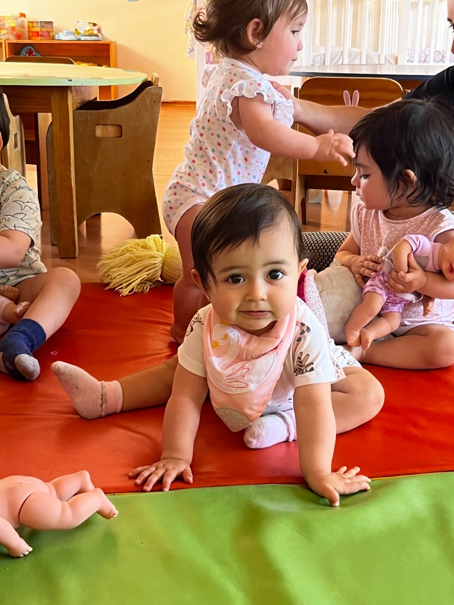
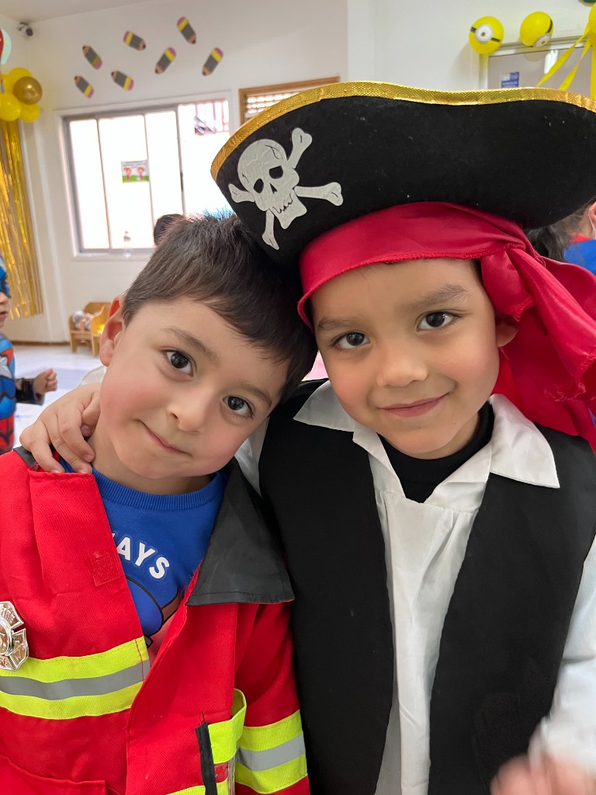
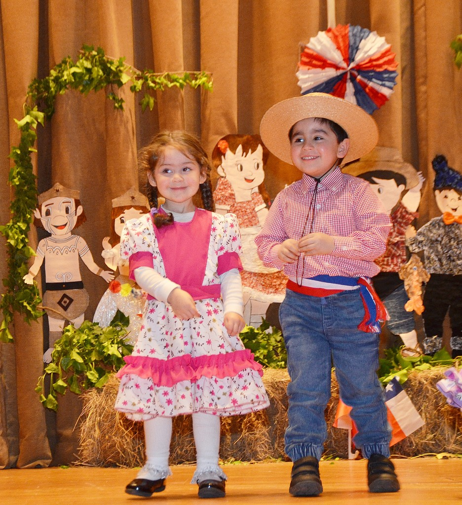
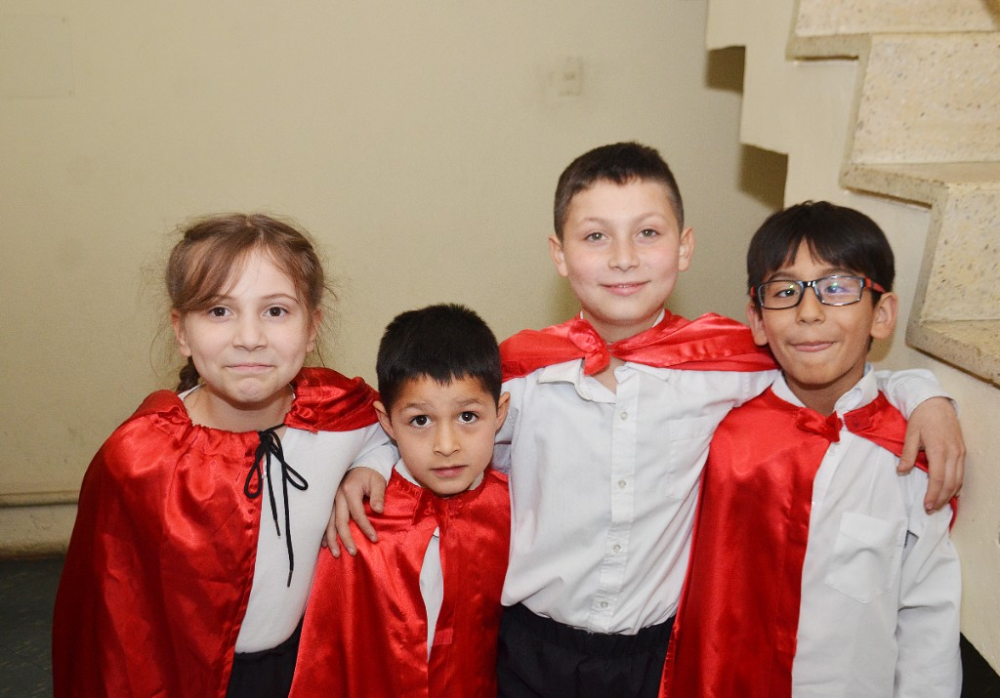

Sala Cuna · 0 a 2 años
Espacio cálido y seguro para los más pequeños, con atención cercana, estimulación temprana y rutinas flexibles.
Nuestra historia
Jardín Infantil y Sala Cuna Koala es un proyecto familiar que por más de 30 años ha acompañado a niños y niñas de Concepción en sus primeros pasos, con un equipo profesional estable y cercano.
Nuestros valores son el cariño, el respeto, la educación integral y el desarrollo emocional, en estrecha alianza con las familias.

Niveles y servicios
Ofrecemos tres modalidades pensadas para las necesidades de cada familia, con un enfoque pedagógico lúdico y respetuoso.

Espacio cálido y seguro para los más pequeños, con atención cercana, estimulación temprana y rutinas flexibles.

Propuesta pedagógica basada en el juego, el descubrimiento y el desarrollo socioemocional.

Acompañamiento después de clases, apoyo en tareas, colación y actividades recreativas en un ambiente de confianza.
Nuestro espacio
Contamos con salas amplias, patios interiores y exteriores, materiales didácticos y rincones preparados para cada etapa.
Testimonios
La confianza de nuestras familias es el corazón del proyecto educativo Koala.
★★★★★
“Mis hijos fueron felices en Koala. Siempre encontramos cariño, contención y una comunicación muy cercana.”
★★★★★
“Destaco la estabilidad del equipo y el ambiente familiar. Siento que realmente conocen a cada niño y niña.”
★★★★★
“Para nosotros fue fundamental el enfoque en el desarrollo emocional y el respeto por los ritmos individuales.”
Contacto
Estamos ubicados en el centro de Concepción, con fácil acceso en transporte público y en vehículo particular.
Agendar visita
Escríbenos directo al WhatsApp de la Tía Paz, directora del jardín, para coordinar una visita o resolver tus dudas sin compromiso.